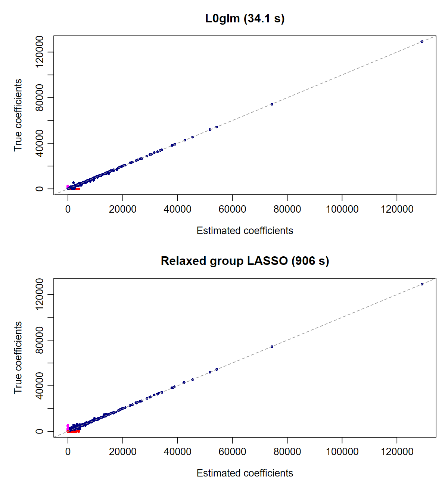

SPARSE REGRESSION · GENERALIZED LINEAR MODELS
Fast variable selection.
Parsimonious models.
Fast L0 and grouped L0 regression to approximate best subset and best subset of groups selection. Accurate effects, cleaner supports, and one interface from ordinary GLMs to multinomial and survival models.
R · Dense & sparse designs · Single & multiple responses

1 millionpredictors in a high dimensional example 35× fasterthan five-fold-CV LASSO in that example 944 / 1000peaks recovered in multichannel GC/MS deconvolution and 94× faster than relaxed group LASSO
Sparse learning across a wide range of models
L0glm combines adaptive ridge with iteratively reweighted least squares, fast linear solvers and an optional relaxed refit. Small effects drop out; strong effects retain their magnitude. A shrinking active set concentrates computation where it matters, producing sparse models with excellent support recovery.
One fitting interface
Gaussian, Poisson, binomial, Gamma and inverse Gaussian GLMs; negative binomial with estimated shape; joint multinomial regression; and Cox proportional hazards.
Built for sparse signals
Dense or sparse matrices, tall or wide systems, grouped multichannel selection, and compiled SIS/ISIS screening for ultrahigh dimensions.
Fit the model you need
Observation weights, offsets, nonnegative coefficients, unpenalized terms, normalization and original-scale estimates. Native OpenMP accelerates nonnegative identity-link Poisson fits.
Choose your workflow
Start with a fast GIC preset, tune an information criterion, or use cross-validation with minimum-deviance and one-standard-error models. Compare methods with sparseglm().
Fit a sparse model
Sixty nonzero effects among one million predictors, fitted in one simple call in about 3 seconds, with 40 out of 60 successfully recovered and just 3 false positives:
library(L0glm)
set.seed(123)
n <- 500L
p <- 1000000L
X <- matrix(rnorm(n*p), n, p)
active <- sample.int(p, 60L)
beta <- numeric(p)
beta[active] <- runif(60L, -.8, .8)
set.seed(1)
y <- as.numeric(X[, active] %*% beta[active]) + rnorm(n)
system.time(fit <- L0glm.fit(X, y, family=gaussian()))
L0glm.metrics(fit, beta_true=beta)[
c("gic", "TP", "FP", "FN", "TN", "F1_score", "MCC")]| Seconds | GIC | TP | FP | FN | TN | F1 | MCC |
|---|---|---|---|---|---|---|---|
| 3.49 | 2583 | 40 | 3 | 20 | 999937 | 0.777 | 0.787 |
Recovered coefficients show near-zero bias:

Install with remotes::install_github("tomwenseleers/L0glm", subdir="L0glm"). The dense design occupies about 4 GB. The getting-started guide explains the example and prediction methods.
Application: sparse deconvolution
In GC/MS analysis, overlapping chromatographic peaks have distinct mass spectra. Recovering their peak times and spectra together is a natural application of grouped L₀ regression. This Poisson simulation has 10,000 observations, 10,000 candidate peak locations, 1,000 true peaks and 226 mass channels.
By regressing the observed signal on a design matrix consisting of shifted copies of the peak-shape function (the point spread function), L0glm recovers the underlying peaks and their mass spectra.
L0glm recovers 944 of 1,000 true peaks with just 11 false positives in 9.63 seconds: 25× faster than GIC-tuned group LASSO and 332× faster than relaxed group LASSO tuned by five-fold CV in this comparison. It also recovers the sparse mass spectra accurately, with a within-row F1 of 0.909. A direct L0glm.fit() call uses lambda="gic" and four cores; the competing methods select lambda from a ten-value grid using GIC or five-fold cross-validation.
multi <- simul(method=4L, n=10000L, p=10000L,
n_nonzero=1000L, seed=2L)
fit_multi <- L0glm.fit(multi$X, multi$y, family=poisson("identity"),
lambda="gic", nonnegative=TRUE, ncores=4L)| Method | Selection | Seconds | GIC | TP | FP | F1 | MCC |
|---|---|---|---|---|---|---|---|
| L0glm | GIC preset | 9.63 | 5615963 | 944 | 11 | 0.966 | 0.962 |
| Group LASSO | GIC path | 244.87 | 7413616 | 980 | 860 | 0.690 | 0.685 |
| Relaxed group LASSO | GIC path | 906.34 | 6138687 | 909 | 309 | 0.820 | 0.802 |
| Group LASSO | 5-fold CV | 813.42 | 9639345 | 998 | 4242 | 0.320 | 0.316 |
| Relaxed group LASSO | 5-fold CV | 3199.62 | 6198648 | 962 | 502 | 0.781 | 0.769 |

The coefficient comparison shows how closely L0glm recovers the individual mass-spectral intensities. Relaxed group LASSO is the strongest alternative in this benchmark.

L0glm fits the Poisson model directly. The group-LASSO methods use a weighted-Gaussian approximation with shared observation weights; CV uses four parallel workers. Explore the deconvolution examples and full benchmark tables →
Choose a starting point
| I would like to… | Start here |
|---|---|
| Fit a model and make predictions | Get started |
| Choose a penalty by GIC or cross-validation | Model selection |
| Use weights, constraints or held-out early stopping | Fitting controls |
| Fit counts, classes or survival outcomes | Negative binomial · Multinomial · Cox |
| Search a very large predictor set | SIS / ISIS |
| Understand the mathematics | Algorithm & theory |
| Compare speed and support recovery | Benchmarks |
Foundations
The method builds on adaptive ridge and broken adaptive ridge, with an IRLS implementation for generalized linear models. The algorithm article develops the quadratic updates and their connection to sparse penalties, drawing on Frommlet & Nuel (2016), Li et al. (2021) and Abergel, Bouaziz & Nuel (2024). It also explains screening, grouped selection and likelihood-based scoring. The adaptive updates also have a hierarchical Bayesian and automatic relevance determination (ARD) interpretation: each ridge step estimates a Gaussian-prior MAP, then the prior scales adapt to the fitted effects. Zero-centered skeptical priors tighten around small effects and relax around strong ones.
Citation
An article describing the methods implemented in L0glm is in preparation. If you use the package before the article is formally published, we would appreciate a citation to the package:
Wenseleers T, Lanzas L, Vanderaa C (2026). L0glm: Fast Sparse Regression for Generalized Linear Models. R package version 0.1.0, https://tomwenseleers.github.io/L0glm/.
The Authors and Citation page also provides the citation in BibTeX format.